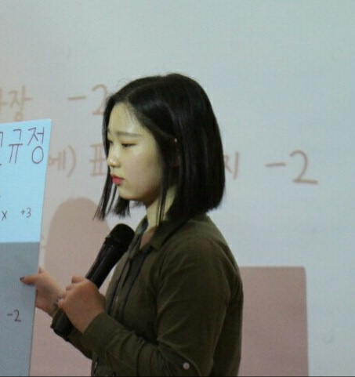

Youtube
#Mirim
#My age 19
Last High School life
Clone Coding: Youtube Mobile Website 유튜브 모바일 웹사이트 따라 만들기 | HTML, CSS, Javascript를 이용한 Website ( + Semantic tag 이용)
1M views 1 Month ago
1K
0
Share
Save
Report
Sandy Hwang
1M subscribers
subscribe
Up Next

TY별별별 활동 | 2018~2021년간의 활동 마무리
Sandy Hwang channel
82K views
1학년 제주 수학여행 | 코로나로 인한 마지막 여행
Sandy Hwang channel
20K views
온다 회사 견학 | 가고 싶은 회사
Sandy Hwang channel
100K views